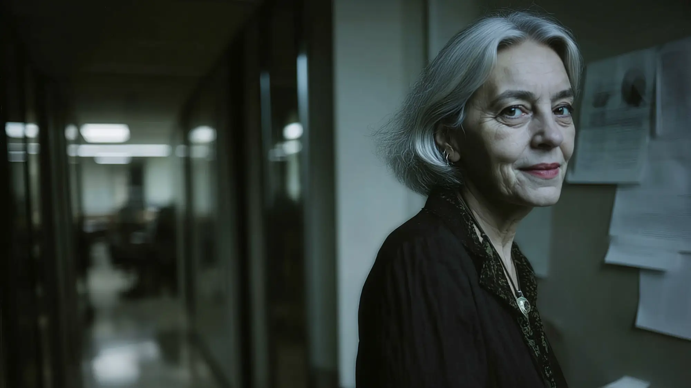
Série pédagogique · Égalité professionnelle
Plafond de Verre
Elles ont le talent. L'expérience. La légitimité.
Et pourtant, quelque chose bloque.
6 épisodes6 mécanismes20 minutes chacun
Celui d'Hélène
Trente ans de métier, huit mois de travail, un nom qu'on ne prononce pas. On y entre comme spectateur, on en sort en ayant choisi.
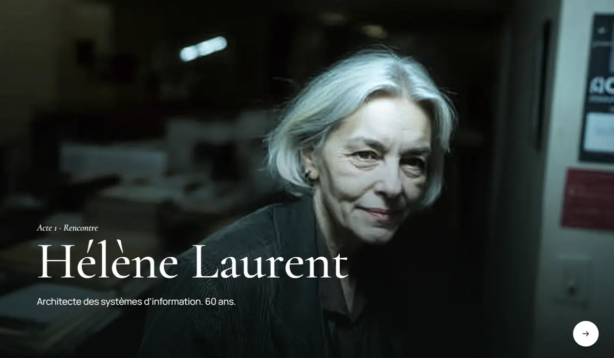
Rencontre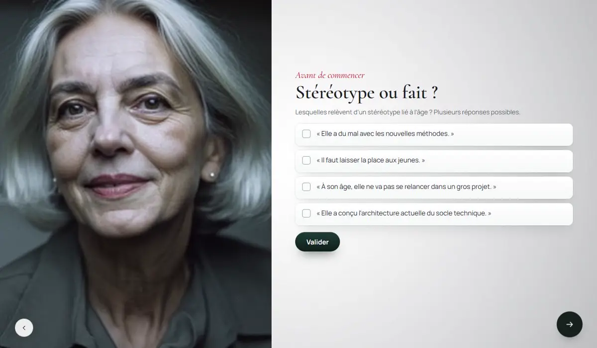
À vous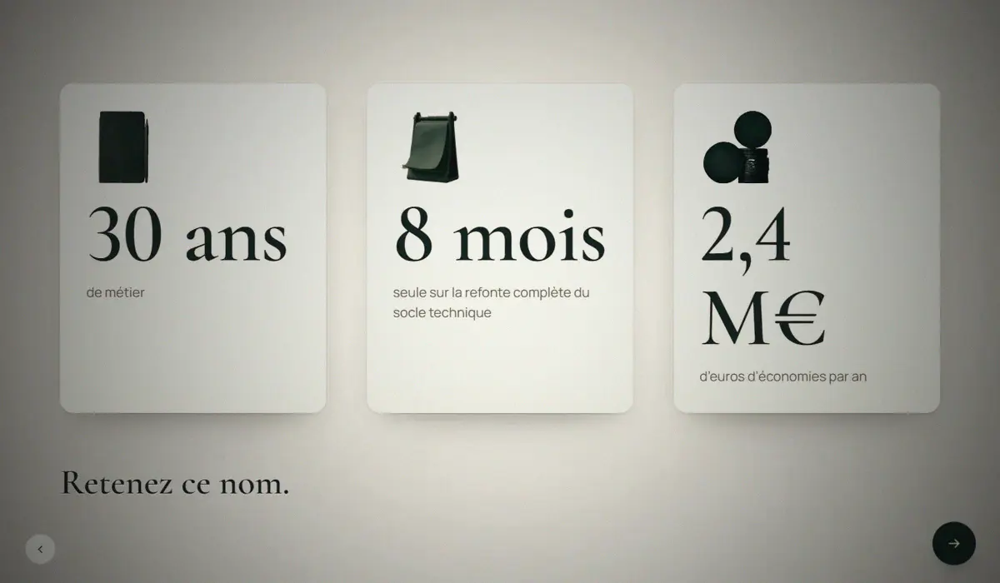
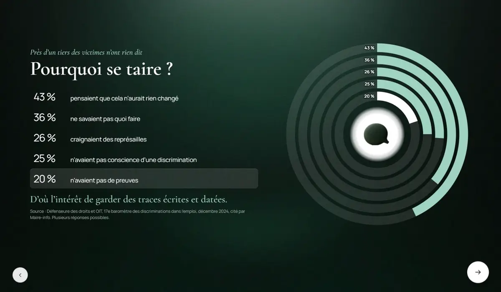
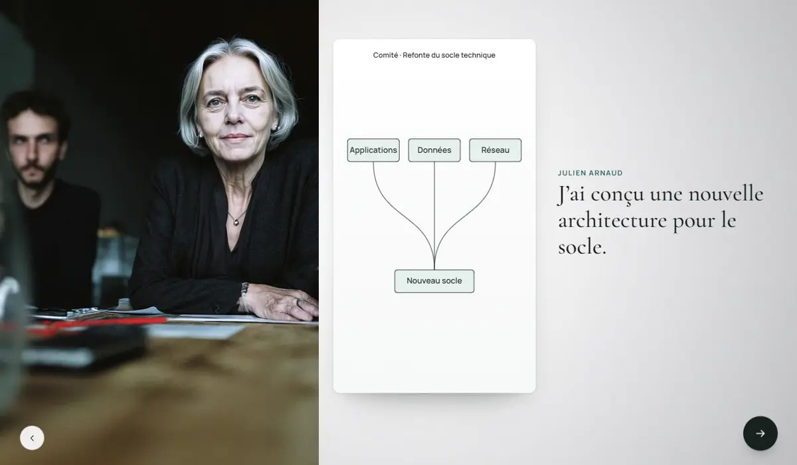
Le comité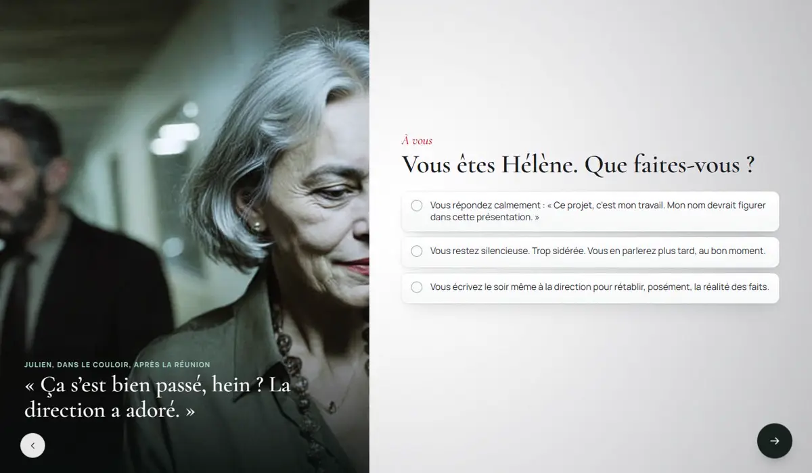
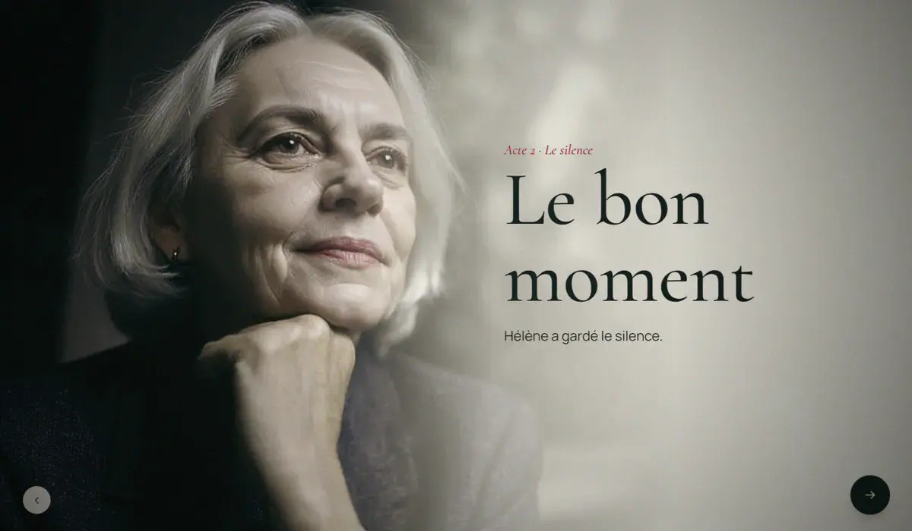
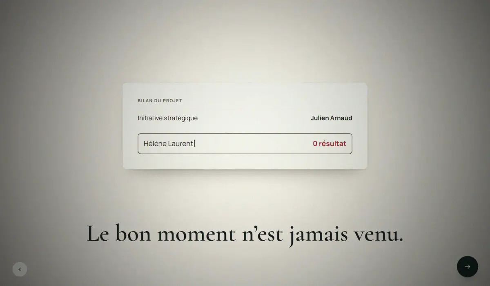
Le silence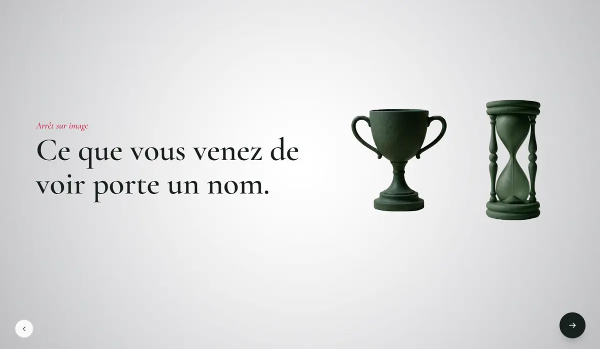
Comprendre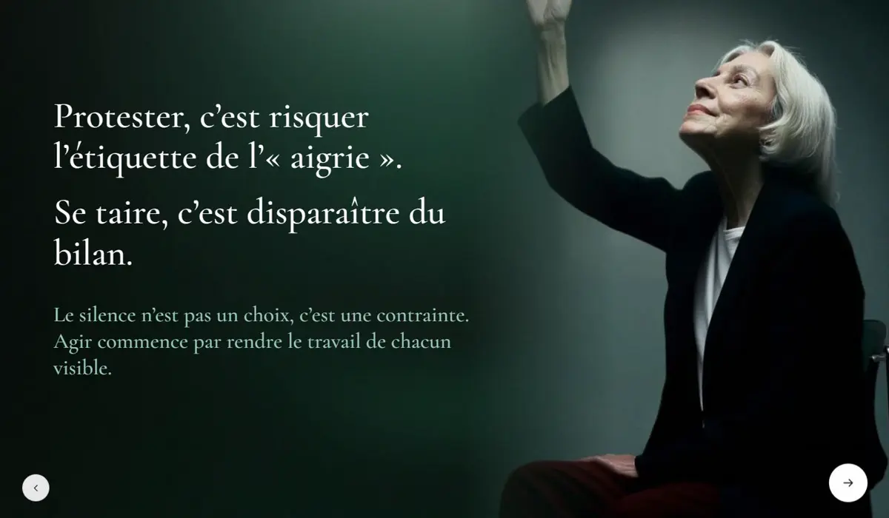
AgirÉpisode 6 · L'invisible compétence · environ 20 minutes · en autonomie ou en atelier
Voir
Une scène de travail ordinaire, jouée réplique par réplique. Rien n'est expliqué : on regarde.
Questionner
Trier les faits des interprétations, prendre la place du personnage, choisir. Chaque choix a un prix.
Déplacer
Le mécanisme est nommé, chiffré, puis rejoué autrement. Chacun repart avec un geste possible.
Les autres histoires
Indispensables, et invisibles.
Cinq autres femmes, cinq mécanismes documentés. Les personnages sont fictifs, les situations ne le sont pas.
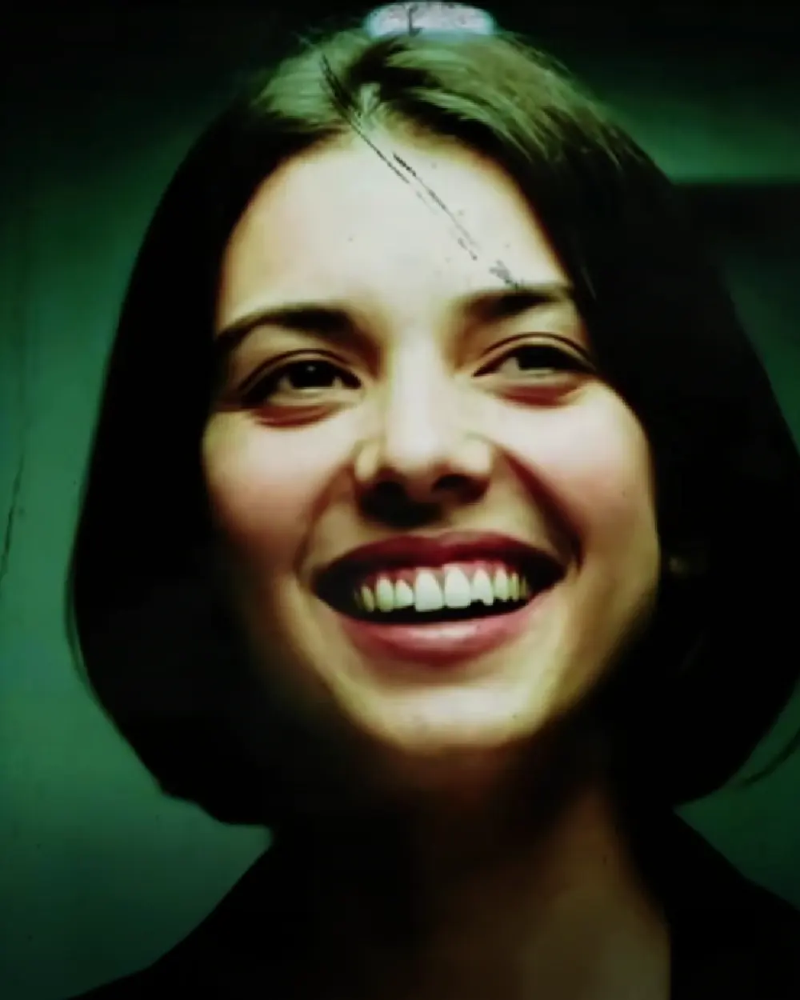
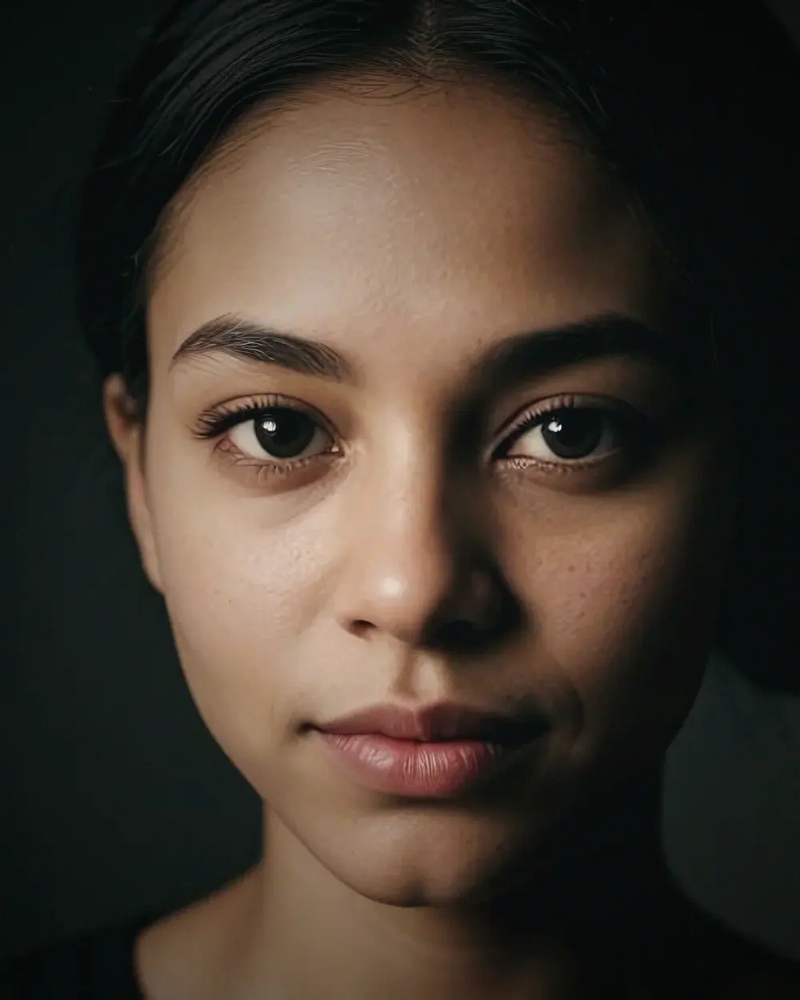
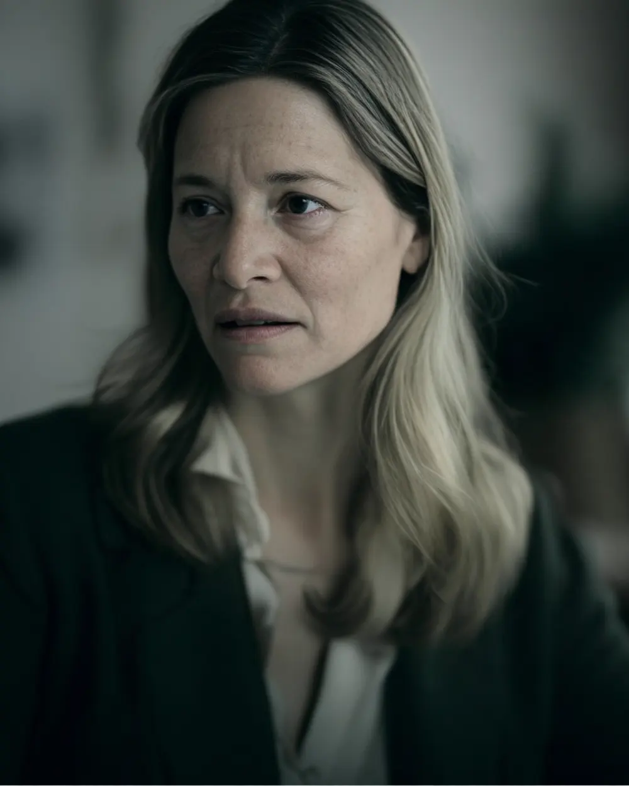
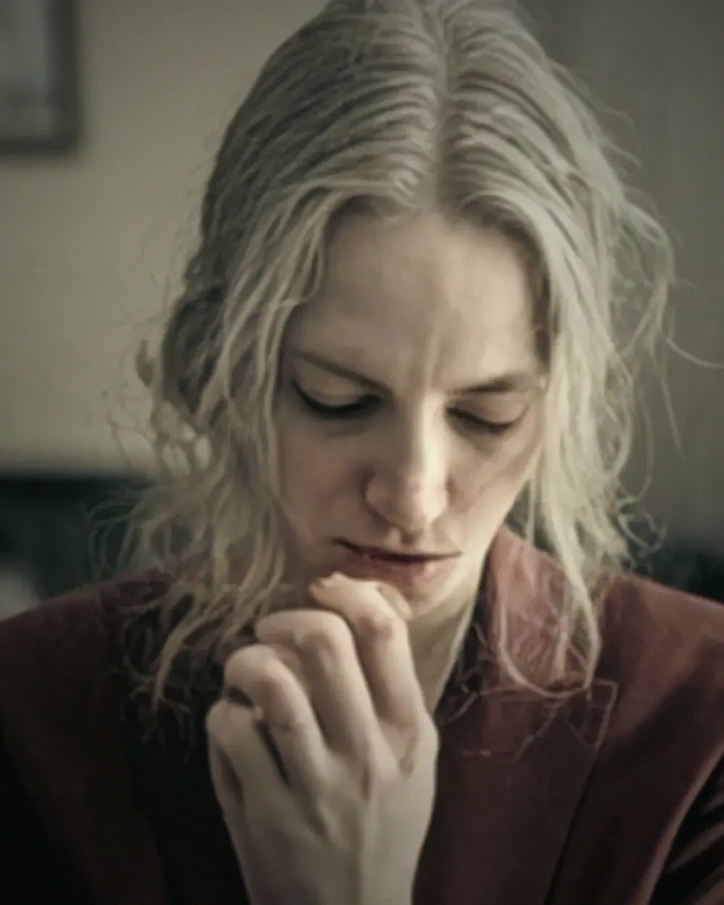
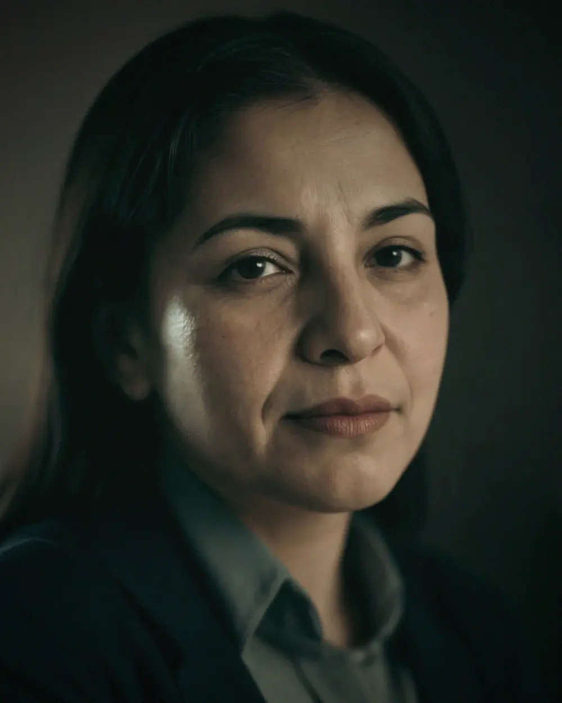
Le récit avant le concept
On ressent la situation avant de la nommer. Le mot arrive quand l'apprenant l'a déjà vécu.
Des personnages vrais
Des visages, des âges, des métiers crédibles. L'identification fait tomber le « ça n'existe pas chez nous ».
Une esthétique qui donne de la dignité
Le soin de la forme dit que le sujet compte. On le prend au sérieux parce qu'il est traité au sérieux.
Chaque épisode est piloté comme un film : écriture, casting, mise en scène, relecture plan par plan.
Pour les organisations
Un parcours de sensibilisation pour les managers, les RH et les comités de direction : en autonomie, ou en atelier pour ouvrir le dialogue.